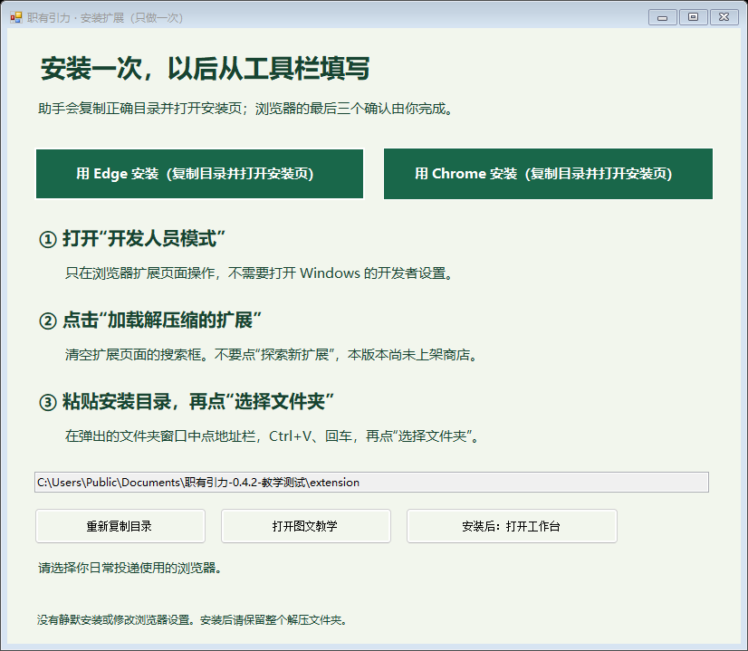
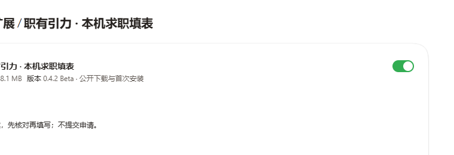
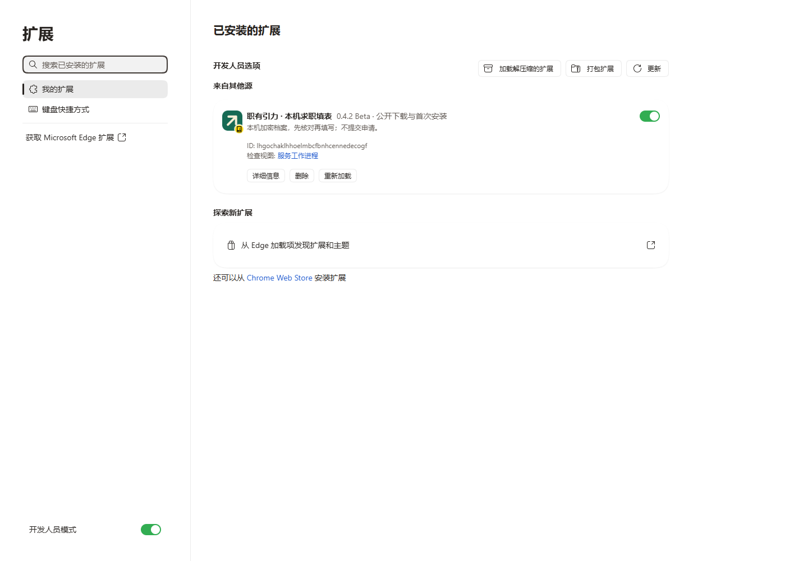
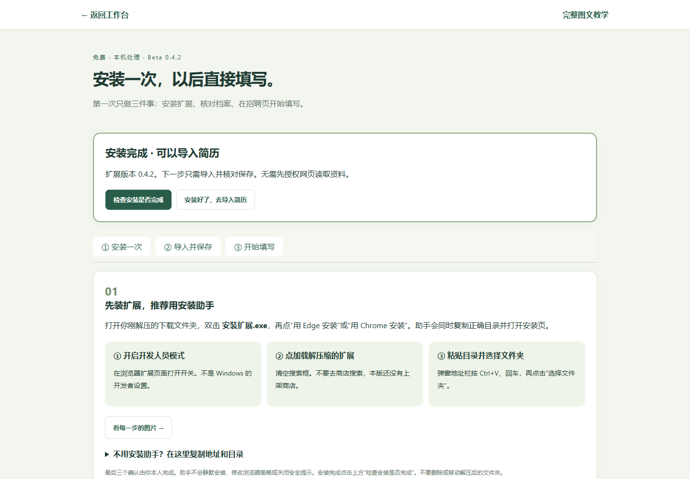
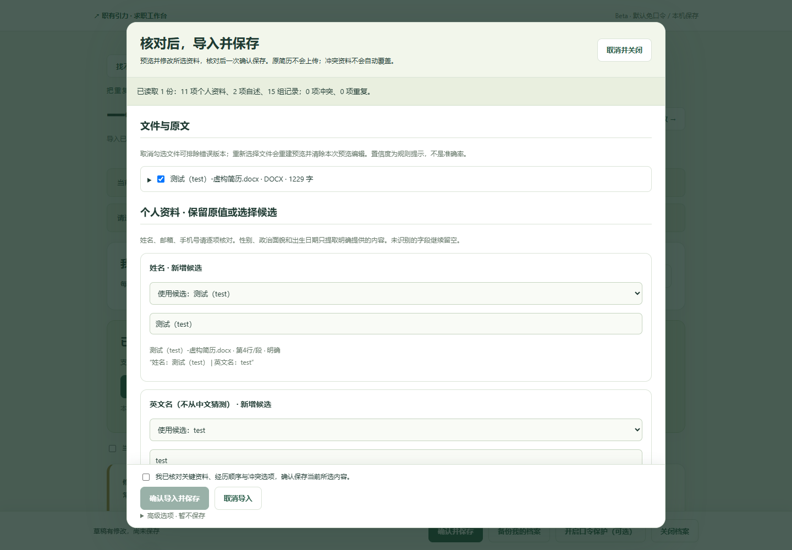
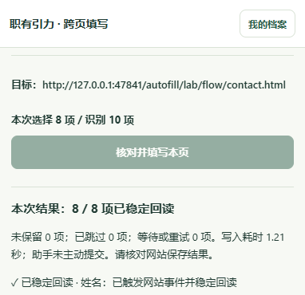

第一次使用，照着做就可以。
解压 → 安装扩展一次 → 导入并核对保存 → 到网申页面填写
图片使用虚构资料和隔离测试浏览器。没有向真实企业提交申请，也不代表所有招聘网站都已兼容。
下载完整 Windows 包，全部解压
在项目下载页选择 zhiyouyinli-windows-0.4.2-beta.1.zip。不要把 GitHub 的“Source code”当成普通用户安装包，也不用再单独下载扩展。
右键 ZIP →“全部提取 / 解压到”，选一个自己容易找到、可写的文件夹。不要在压缩包里面双击运行。
程序自带运行环境，不用安装 Node、输入命令或注册软件账号。其余文件夹保留即可，不需要研究源码。
下载地址：GitHub 0.4.2 Beta 下载页。网络受限时可让可信的人转发原 ZIP，并对照下载页的 SHA-256 校验，避免来源不明的修改版。
双击安装助手，选日常使用的浏览器
双击 安装扩展.exe，点“用 Edge 安装”或“用 Chrome 安装”。这一次点击会复制正确目录并打开扩展管理页。安装到你日常投递的浏览器里。

安装助手不会偷偷安装扩展，不改浏览器策略。窗口较小时可以滚动查看下方说明。
在浏览器确认三步，之后不用重复
- 打开“开发人员模式”。只操作浏览器扩展页面，不需要改 Windows 开发者设置。
- 点击“加载解压缩的扩展”。先清空左上角搜索框，不要去“探索新扩展”里搜索。
- 粘贴目录，选择文件夹。在弹出的窗口点地址栏，Ctrl+V → 回车 →“选择文件夹”。要选整个 extension 文件夹，不能选择 manifest.json 单个文件。

展开看完整 Edge 安装页面

Chrome 使用 chrome://extensions，按钮含义相同；不同版本位置可能略有变化。装好后双击 开始使用.exe，在首页“安装扩展”中点击“检查安装是否完成”。看到“安装完成 · 可以导入简历”再继续。可以在浏览器拼图菜单中把本扩展固定到工具栏。
安装后保留整个解压文件夹。扩展需要从这里读取文件，不要移走或删除。公司管理的浏览器若禁止开发人员模式，需要管理员允许；本软件不绕过限制。
工作台会告诉你是否准备好了

“未检测到”：回到你安装扩展的 Edge / Chrome 打开工作台，刷新后再检查。“检测到另一版本”：先导出档案备份，再按第七步更新。免口令模式适合自己的电脑；同一浏览器的其他使用者也能打开档案，口令保护不是清除历史免口令副本。
第一次直接从首页点“导入简历”或从此页面点“安装好了，去导入简历”。日常不需要反复“连接”“批准”两套资料。迁移旧离线档案或用网页编辑共享档案时，才按提示选择来源与授权。
上传自己的简历，识别不全可以自己改
- 点“导入已有简历”，选择 DOCX 或有文字层的 PDF。先选择一份就能开始；多份简历会展示重复与冲突。
- 逐项核对姓名、邮箱、手机、学历和经历时间。软件保留原文来源；性别、政治面貌、生日只有原文明确提供才提取。
- 缺少或识别不准的内容可以在预览中修改，也可以在“我的档案”补充、增删多条记录。
- 勾选已核对，点“确认导入并保存”。看到保存成功即可，不用再重复点第二次保存。

默认免口令：不需要软件账号、API 密钥或付费服务。资料保存在当前浏览器本机，不上传原简历。可随时在“我的档案”自愿开启口令保护；已开启时口令遗失无法找回。免口令备份含完整个人资料、未加密，请勿分享。扫描件 OCR、旧 DOC、加密 PDF 暂不支持。
到网申页面，直接复用，逐页核对填写
- 用装了扩展的浏览器打开招聘网站，先完成网站自己的登录。
- 点工具栏扩展 →“开始跨页填写”→“开始本次网申”，默认不需要口令。仅开启保护的档案需解锁一次。
- 侧栏自动识别当前页。核对字段与来源，多段经历需要时点“准备经历分组”。
- 点“核对并填写本页”，查看成功、失败、跳过和待确认结果，再检查网站的实际内容。
- 你自己点网站的保存和下一步。下一页、页面刷新、回退、同网址切换步骤会自动重新检测，无需每次重开扩展、导入或解锁。

已有输入默认保护。身份证、声明、验证码、附件等由本人处理。未知或歧义字段可能需要手工补填。填写会让目标网站读取这些内容，请只在你信任的招聘页面使用。
更新和遇到问题时，按这里处理
| 看到的情况 | 下一步 |
|---|---|
| 扩展页面搜索不到 | 清空搜索框。当前 GitHub 下载版不在商店搜索结果里，要“加载解压缩的扩展”。 |
| 工具栏找不到图标 | 点击浏览器拼图图标，找到“职有引力”，固定或显示在工具栏。 |
| 开始使用打不开 | 确认整个 ZIP 已解压、没有只移动 EXE。关闭正在运行的旧版本，再用当前包启动。运行环境缺文件时重新下载完整包。 |
| 系统提示未知发布者 | 当前自制 EXE 未签名。先确认来自本项目并核对校验值；若 Windows 拦截，点“更多信息”核对文件名，确认来源后由本人决定是否“仍要运行”。不能确认就不要运行；不关闭杀毒软件。 |
| 旧扩展需要更新 | 先导出档案备份。保持原 extension 目录位置，把新包 extension 中的文件复制到原目录，再点原扩展卡片的“重新加载”。不要先删除旧扩展或同时启用两个副本。 |
| 换浏览器或换目录后档案为空 | 保留原浏览器/扩展，不要清理数据。导出原档案备份，在新扩展“恢复档案备份”中预览并确认恢复。未加密备份无需口令；加密备份必须输入原口令。 |
| 某字段没填或网站没保存 | 核对报告，手工纠正后重新检测。没有可靠匹配的字段会保留人工，不能把表面显示当作网站已经保存。 |
原招聘搜索、薪资筛选、标签、收藏与投递管理保留。公开包不附未经许可的第三方岗位快照，初始岗位列表为空。
平台依据：微软本地加载扩展说明；Chrome 本地加载说明。GitHub 下载发行不代表浏览器商店已经上架。商店一键安装需要开发者账号、资料声明与审核。
软件源码与问题反馈：github.com/Huamucuo/job-workbench-cn。本教学可离线打开；外部参考链接需要网络。